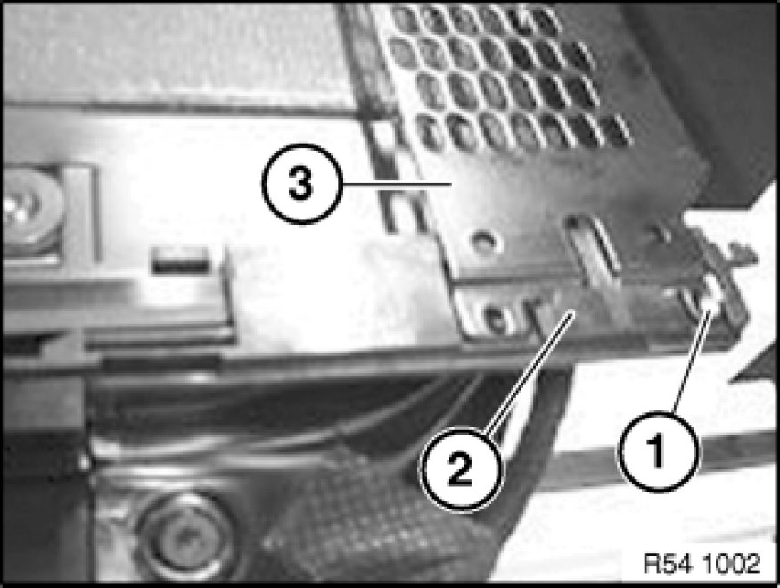
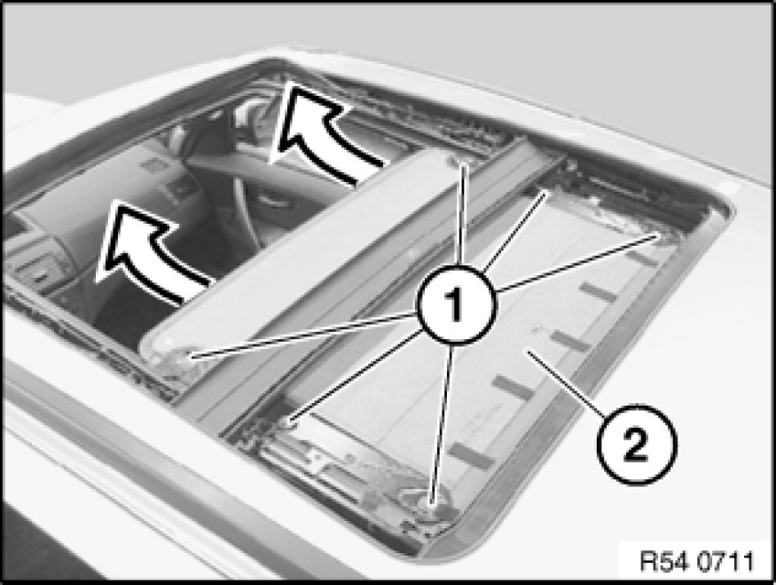
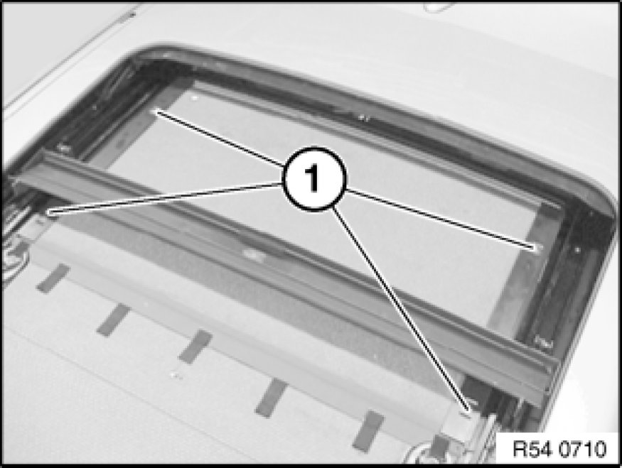
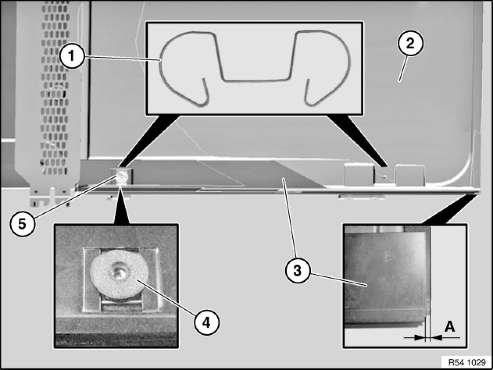

54 13 070 Removing and Installing/Replacing Both Floating Roofliners For Glass Slide/Tilt Sunroof
54 13 070 - Removing and installing/replacing both floating roofliners for glass slide/tilt sunroof

Necessary preliminary tasks:
- Remove glass slide/tilt sunroof lid at front and rear
Note:
Front and rear floating roofliners can be removed separately from each other.
Make sure that grease on the rails does not come into contact with the floating roofliner.

Release screw (1).
Release clips (2) with rotary block.
Remove fan plate (3).
Installation:
Do not tighten down screw (1), fan plate (3) should be able to move in Y-direction.

Front floating roofliner:
Open floating headliner approx. halfway.
Front rain channel must be situated between first and second screws.
Release bolts (1).
Tightening torque: 54 12 04AZ 54 12 Mechanical Components, Panorama Sunroof.
Remove star shims.
Installation:
Replace microencapsulated screws and insert with Loctite.
Make sure star shims are correctly positioned.
Pull out floating roofliner (2) in direction of arrow.
If necessary, press wind deflector downwards.
Installation:
Carefully raise floating roofliner mechanism.

Rear floating roofliner:
Close roofliner completely but not in fan position.
Release bolts (1).
Remove tensioning springs (left side only) and washers.

Slide floating roofliner (4) in direction of arrow (1) between outer body skin and roofliner.
Slide floating roofliner (4) up to end of control rail (3).
Raise floating roofliner (4) and remove over control rail (3) in direction of arrow (2).

Installation:
Tensioning springs (1) must rest correctly in recess of floating roofliner (2).
Adjust gap A = 3±0.2 mm from control rail (3) to floating roofliner (2).
Make sure washer (4) is correctly positioned with turning lock.
Pull tensioning springs for fitting screws (5) to outside of vehicle.
Replace microencapsulated screws (5) and insert with Loctite.
Tightening torque: 54 12 05AZ 54 12 Mechanical Components, Panorama Sunroof.
Performing function check:
- Floating roofliner must be able to move in control rail in X-direction.
- Floating roofliner is positioned on right and can be pressed towards left under spring tension.
- Floating roofliner springs back towards right into initial position.